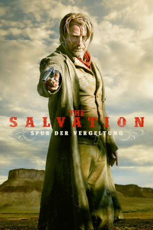
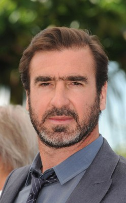
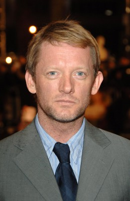
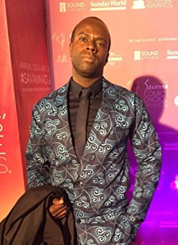

#166 The Salvation
 
 IMDB-Wertung: 6.7 / 10
IMDB-Wertung: 6.7 / 10  Metascore: 64
Metascore: 64 
1871: Der dänische Auswanderer Jon ist überglücklich, dass endlich seine Frau Marie und sein zehn Jahre alter Sohn Kresten zu ihm und seinem Bruder Peter nachziehen. Doch schon kurz nach ihrer Ankunft werden Frau und Kind von Banditen getötet, die daraufhin von Jon erschossen werden. Einer der Toten ist allerdings der kleine Bruder des gefürchteten Bandenanführers Delarue. Der terrorisiert die Gegend, erpresst alle Ortschaften und ist nun auf Rache aus. Im nächstgelegenen Örtchen Black Creek richtet er erst einmal ein paar Bürger hin, um dem Rest klarzumachen, dass man ihm denjenigen, der für den Tod seines Bruders verantwortlich ist, ausliefern muss. Der lokale Sheriff Mallick verhaftet Jon daraufhin und übergibt ihn an Delarue…
Jahr: 2014
Dauer: 92 Minuten
FSK: 16
Land: Dänemark Studio: Concorde FilmverleihTonspuren: DTS - ,
Untertitel:
Auflösung: 1080p (1920×808) Größe: 7761 MB
Genre: Drama, Western
Regisseur: Kristian Levring
Drehbuch: Anders Thomas Jensen, Kristian Levring
Soundtrack: Kasper Winding
Darsteller:
 Mads Mikkelsen als Jon Jensen
Mads Mikkelsen als Jon Jensen Eva Green als Madelaine
Eva Green als Madelaine Jeffrey Dean Morgan als Henry Delarue
Jeffrey Dean Morgan als Henry Delarue-  Eric Cantona als Corsican
 Mikael Persbrandt als Peter Jensen
Mikael Persbrandt als Peter Jensen-  Douglas Henshall als Sheriff Mallick
 Michael Raymond-James als Paul Delarue
Michael Raymond-James als Paul Delarue Jonathan Pryce als Mayor Nathan Keane
Jonathan Pryce als Mayor Nathan Keane- Alexander Arnold als Voichek Borowski
- Nanna Øland Fabricius als Marie Jensen
- Toke Lars Bjarke als Kresten Jensen
 Sean Cameron Michael als Lester
Sean Cameron Michael als Lester- José Domingos als Mr. Raul Delgado
- Sivan Raphaely als Mrs. Delgado
 Grant Swanby als Joe No Leg
Grant Swanby als Joe No Leg Adam Neill als Mr. Bradley
Adam Neill als Mr. Bradley-  Anthony Oseyemi als Jefferson
 Nick Boraine als Man With Cigar
Nick Boraine als Man With Cigar Robert Hobbs als Silvertooth
Robert Hobbs als Silvertooth Langley Kirkwood als Man With Beard
Langley Kirkwood als Man With Beard- Daniel Janks als US Marshall
- Carel Nel als Stagecoach Whip
- Kobus Swanepool als Stagecoach Gunman
- Vanessa Cooke als Mrs. Borowski
- Theo Geldenhuys als Mr. Whisler
- Susan Danford als Mrs. Whisler
- Matthew Thompson als Whisler Boy
- Kelly Lambe als Whisler Girl
- Danny Keogh als Calder Jenkins
- David James als Tracker
- Anthony Bishop als Skinny Man
- St John Alexander als One Eyed Jack
- Aidan Lithgow als Rattlesnake
- Dan Robbertse als Aron
- Andre Odendaal als Cash
- Ian Edmondstone als Train Conductor #1
- Willem Huyzers als Train Conductor #2
- Jacques Gombault als Moustache Man on Train
- Koos Dippenaar als Delarue's Gang
- Chad Sapire als Delarue's Gang
- Juan Dippenaar als Delarue's Gang
- Tjaka Erasmus als Delarue's Gang
- Hannes Vosloo als Delarue's Gang
- Chris Oberem als Delarue's Gang
- Jimmy Fell als Delarue's Gang
- Gavin Mey als Delarue's Gang
- Janus Prinsloo als Villager (uncredited)
Datei: X:\HD-Western-2000-2015\Salvation, The (2014, FSK16, 1920x808).mkv seit 14.02.2015
Festplatte: HD Eastern+Western
 Es gibt insgesamt 61 Filme in der Gruppe 'HD-Western-2000-2015'
Es gibt insgesamt 61 Filme in der Gruppe 'HD-Western-2000-2015'